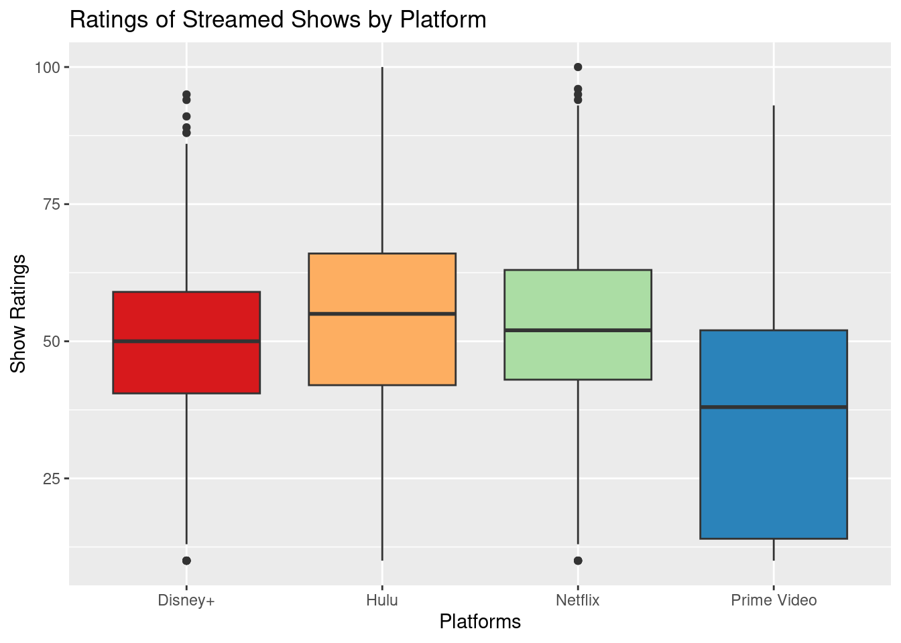

Streaming platforms have taken the world by storm due to their convenience and ability to house innumerable popular television shows and movies. As these mediums continue to grow in popularity, discourse about them is also developing and is often centered around one primary question: Which platform is best? Throughout our data analysis, our team seeks to answer this aforementioned question to the best of our ability, taking an in-depth look at four mainstream services —- Netflix, Amazon Prime Video, Hulu, and Disney+ —- and the programs that have been present on the site throughout roughly the past two decades. Specifically, we use rankings developed by Rotten Tomatoes and hypothesis testing to approach two research questions: “Is the quality of exclusive shows different from non-exclusive shows in each respective platform?” and “Are exclusive shows’ ratings different between the four platforms (Netflix, Hulu, Disney+, and Prime Video)?”
Regarding the first hypothesis, we were unable to reject the null hypothesis: Rotten Tomatoes score of exclusive shows are less than the Rotten Tomatoes score of non-exclusive shows across all four platforms. In terms of the second research question, our findings were in favor of the alternate hypothesis: there is a difference in ratings between the exclusive shows on each of the four platforms.
Data description
The observations (rows) of the tvshows dataset represent each individual TV show that is readily watched and broadcasted on at least one of the four top ranking broadcasting platforms (we are focusing on Hulu, Disney+, Prime Video and Netflix). The attributes (columns) of the tvshows dataset categorizes each individual TV show based on the streaming platform it’s being broadcasted on and reveals additional information. This includes revealing the year the TV show was produced, target age group of audience, and the rating of the show (by the Rotten Tomatoes metric).
This dataset was created by the curator after being inspired by personal experiences of wanting to know more about which streaming platform(s) a particular TV show can be found on. Furthermore, the curator wished to explore potential relationships between target age group of audience, year of production, and the streaming platform the show can be found on. The creation of the tvshows dataset was not funded by anyone and was curated solely with the desire to learn more about tv shows readily broadcasted on top streaming platforms. Specifically, the curator likely looked at TV shows broadcasted on each streaming platform to determine which Rotten Tomatoes ratings to include within the dataset and determine which year of production data as well as target age of audience should be included.
In regards to the preprocessing of the data, the Rotten Tomatoes score itself needed to undergo specific calculations before the curator is able to scrape the Rotten Tomatoes score for the corresponding TV shows. To summarize, the Rotten Tomatoes score is calculated only when the show receives at least 5 reviews. Then, the critic’s rating of “Fresh” (positive) or “Rotten” bad is collected and the Rotten Tomatoes percentage is calculated by dividing the number of “Fresh” scores by the total number of “Fresh” and “Rotten” scores times 100. In addition, the curator then used a binary system (0 for “no” and 1 for “yes”) to classify which streaming platform(s) each TV show can be found on.
The curator did not involve any other people during the data collection and likely collected the data from official sites that reported the taken corresponding data values. At the same time, the Rotten Tomatoes data values inherently involve people as the score is reliant on people’s opinions and rating of the show. From this perspective, the people are likely aware of this data collection as they are displaying their ratings of the tv shows in a public domain. They likely expected their data to be used to contribute to the overall rating of the TV show and used to inform others on whether they should watch the respective TV show.
New names:
Rows: 5368 Columns: 12
── Column specification
──────────────────────────────────────────────────────── Delimiter: "," chr
(4): Title, Age, IMDb, Rotten Tomatoes dbl (8): ...1, ID, Year, Netflix, Hulu,
Prime Video, Disney+, Type
ℹ Use `spec()` to retrieve the full column specification for this data. ℹ
Specify the column types or set `show_col_types = FALSE` to quiet this message.
• `` -> `...1`
tv_shows_cleaned <- tv_shows |>mutate(Netflix =if_else(Netflix ==1, "Yes", "No"), Hulu =if_else(Hulu ==1, "Yes", "No"),`Prime Video`=if_else(`Prime Video`==1, "Yes", "No"),`Disney+`=if_else(`Disney+`==1, "Yes", "No"),`Rotten Tomatoes`=str_remove(`Rotten Tomatoes`, "/100"),`Rotten Tomatoes`=parse_integer(`Rotten Tomatoes`)) |>mutate(exclusive_netflix = Netflix =="Yes"& Hulu =="No"&`Prime Video`=="No"&`Disney+`=="No",exclusive_hulu = Hulu =="Yes"& Netflix =="No"&`Prime Video`=="No"&`Disney+`=="No",exclusive_prime_video =`Prime Video`=="Yes"& Netflix =="No"& Hulu =="No"&`Disney+`=="No",exclusive_disney_plus =`Disney+`=="Yes"& Netflix =="No"& Hulu =="No"&`Prime Video`=="No")tv_shows_cleaned
# A tibble: 5,368 × 16
...1 ID Title Year Age IMDb `Rotten Tomatoes` Netflix Hulu
<dbl> <dbl> <chr> <dbl> <chr> <chr> <int> <chr> <chr>
1 0 1 Breaking Bad 2008 18+ 9.4/… 100 Yes No
2 1 2 Stranger Things 2016 16+ 8.7/… 96 Yes No
3 2 3 Attack on Titan 2013 18+ 9.0/… 95 Yes Yes
4 3 4 Better Call Sa… 2015 18+ 8.8/… 94 Yes No
5 4 5 Dark 2017 16+ 8.8/… 93 Yes No
6 5 6 Avatar: The La… 2005 7+ 9.3/… 93 Yes No
7 6 7 Peaky Blinders 2013 18+ 8.8/… 93 Yes No
8 7 8 The Walking De… 2010 18+ 8.2/… 93 Yes No
9 8 9 Black Mirror 2011 18+ 8.8/… 92 Yes No
10 9 10 The Queen's Ga… 2020 18+ 8.6/… 92 Yes No
# ℹ 5,358 more rows
# ℹ 7 more variables: `Prime Video` <chr>, `Disney+` <chr>, Type <dbl>,
# exclusive_netflix <lgl>, exclusive_hulu <lgl>, exclusive_prime_video <lgl>,
# exclusive_disney_plus <lgl>
`summarise()` has grouped output by 'decile'. You can override using the
`.groups` argument.
mean_rankings <-data.frame(platform =c('Netflix','Hulu','Amazon Prime','Disney'),mean=c(netflix[[3]][1], hulu[[3]][1], prime[[3]][1], disney[[3]][1]))total_per_platform |>ggplot(aes(x = decile, y = number, fill = platform)) +geom_bar(position ="fill", stat ="identity") +scale_color_viridis_d(option ="D", end =0.8) +theme_minimal() +labs(title ="Percent of shows that fall under a given decile for each platform",x ="Decile", y ="Fraction of shows", fill ="Platforms", disnay ="Disney+") +scale_fill_discrete(labels =c("Disney+", "Hulu","Netflix", "Prime Video"))
total |>ggplot(aes(x = platform, y = rotten_tomatoes)) +geom_boxplot() +labs(title ="Ratings of Streamed Shows by Platform", x ="Platforms", y ="Show Ratings")

mean_rankings |>ggplot(aes(x = platform, y = mean)) +ylim(c(0, 100)) +geom_bar(stat ="identity") +labs(title ="Ratings of Streamed Shows by Platform",x ="Platforms", y ="Mean Ratings")
Evaluation of significance
First Analysis: Hypothesis Test
Research Question: Is the quality of exclusive shows different from non-exclusive shows in a specific platform, for each platform separately?
Null Hypothesis: The average Rotten Tomatoes score of exclusive shows is less than the average Rotten Tomatoes score of non-exclusive shows across all four platforms.
\[
H_0: \mu_{exclusive} < \mu_{non-exclusive}
\]
Alternative Hypothesis: The average Rotten Tomatoes score of exclusive shows is greater than the average Rotten Tomatoes score of non-exclusive shows across all four platforms.
Warning: Please be cautious in reporting a p-value of 0. This result is an
approximation based on the number of `reps` chosen in the `generate()` step. See
`?get_p_value()` for more information.
# A tibble: 21,472 × 14
...1 ID Title Year Age IMDb rotten_tomatoes Netflix Hulu prime_video
<dbl> <dbl> <chr> <dbl> <chr> <chr> <int> <chr> <chr> <chr>
1 0 1 Brea… 2008 18+ 9.4/… 100 Yes No No
2 0 1 Brea… 2008 18+ 9.4/… 100 Yes No No
3 0 1 Brea… 2008 18+ 9.4/… 100 Yes No No
4 0 1 Brea… 2008 18+ 9.4/… 100 Yes No No
5 1 2 Stra… 2016 16+ 8.7/… 96 Yes No No
6 1 2 Stra… 2016 16+ 8.7/… 96 Yes No No
7 1 2 Stra… 2016 16+ 8.7/… 96 Yes No No
8 1 2 Stra… 2016 16+ 8.7/… 96 Yes No No
9 2 3 Atta… 2013 18+ 9.0/… 95 Yes Yes No
10 2 3 Atta… 2013 18+ 9.0/… 95 Yes Yes No
# ℹ 21,462 more rows
# ℹ 4 more variables: disney_plus <chr>, Type <dbl>, all_platforms <chr>,
# exclusivity <lgl>
names(tv_shows_cleaned_copy1)[7] <-"rotten_tomatoes"observed_fit1 <- tv_shows_cleaned_copy1 |>specify(rotten_tomatoes ~ exclusivity) |>calculate(stat ="diff in means", order =c(TRUE, FALSE))observed_fit1
Response: rotten_tomatoes (numeric)
Explanatory: exclusivity (factor)
# A tibble: 1 × 1
stat
<dbl>
1 -1.14
null_fits1 <- tv_shows_cleaned_copy1 |>specify(rotten_tomatoes ~ exclusivity) |>hypothesize(null ="independence") |>generate(reps =1000, type ="permute") |>calculate(stat ="diff in means", order =c(TRUE, FALSE))get_p_value(x = null_fits1,obs_stat = observed_fit1,direction ="less")
Warning: Please be cautious in reporting a p-value of 0. This result is an
approximation based on the number of `reps` chosen in the `generate()` step. See
`?get_p_value()` for more information.
# A tibble: 1 × 1
p_value
<dbl>
1 0
#Confidence Intervalsnull_fits1 <- tv_shows_cleaned_copy1 |>specify(rotten_tomatoes ~ exclusivity) |>hypothesize(null ="independence") |>generate(reps =1000, type ="bootstrap") |>calculate(stat ="diff in means", order =c(TRUE, FALSE))ci1 <-get_confidence_interval(x = null_fits1,point_estimate = observed_fit1,level =0.95)print(ci1)
# Permuting to compute p valuesnull_fits <- tv_shows_exclusive |>specify(`Rotten Tomatoes`~ shows) |>hypothesize(null ="independence") |>generate(reps =1000, type ="permute") |>fit()get_p_value(x = null_fits,obs_stat = observed_fit,direction ="two sided")
Warning: Please be cautious in reporting a p-value of 0. This result is an
approximation based on the number of `reps` chosen in the `generate()` step. See
`?get_p_value()` for more information.
Warning: Please be cautious in reporting a p-value of 0. This result is an
approximation based on the number of `reps` chosen in the `generate()` step. See
`?get_p_value()` for more information.
Warning: Please be cautious in reporting a p-value of 0. This result is an
approximation based on the number of `reps` chosen in the `generate()` step. See
`?get_p_value()` for more information.
The intercept of 35.45341513 shows, on average, the estimated Rotten Tomatoes rating for a show that is non-exclusive for any of the four platforms.
The coefficients for NetflixYes, HuluYes, disney_plusYes, and prime_videoYes represent the estimated differences in Rotten Tomatoes ratings that are exclusive to each platform compared to non-exclusive. The 17.02 coefficient for NetflixYes shows that shows exclusive to Netflix have an estimated average Rotten Tomato ratings higher by 17.02 points than ratings non-exclusive to Netflix. Similarly, the coefficient of HuluYes shows that shows exclusive to Hulu have an average of 15.79 points higher ratings in Rotten Tomatoes than non exclusive shows. The coefficient of disney_plusYes shows that shows exclusive to Disney+ have an average of 11.86 points higher Rotten Tomato ratings than non-exclusive shows. Finally, the coefficient of prime_videoYes shows that the shows exclusive to Prime Video have an average of 0.07 points lower ratings in Rotten Tomatoes than shows non-exclusive to Prime Video.
Hypothesis #1: confidence intervals
The 95% confidence intervals for observing similar results in the population for shows exclusive to either Hulu, Netflix, Disney+, or Prime Video are
[-2.026, 1.82] for HuluYes
[-2.01, 1.83] for NetflixYes
[-2.56, 2.43] for disney_plusYes
[-2.07, 1.89] for prime_videoYes
Because all the above confidence intervals include 0 in their interval we cannot confidently rule out the possibility that shows exclusive the given platform do not have a significant influence on Rotten Tomatoes ratings.
The 95% confidence interval [45.36, 49.26] for the intercept shows that we can be confident that the average Rotten Tomato rating observed in real population falls into the observed range.
Hypothesis #1: p-values
The intercept p-value is 0.001 which represents the p-value for non-exclusive shows of all 4 platforms. For exclusive shows on Hulu, Netflix, and Disney Plus, we calculated a p-value of 1 whereas exclusive shows on Prime Video had a p-value of 0.466. Since the p-values for exclusive shows on all 4 platforms is greater than the significance level indicated by \(\alpha\) = 0.05, we fail to reject the null hypothesis (the mean Rotten Tomatoes score of exclusive shows is less than the mean Rotten Tomatoes score of high-rated non-exclusive shows across all four platforms). This means that there wasn’t convincing evidence that would favor the alternative hypothesis.
Hypothesis #2: point estimate
The intercept 52.747303 represents, on average, the Rotten Tomatoes score for exclusive Netflix shows.
The estimated Rotten Tomatoes score for exclusive Disney plus shows, on average, will be 4.600244 less than the exclusive Netflix shows Rotten Tomatoes score. The estimated Rotten Tomatoes score for exclusive Hulu shows, on average, will be 1.556898 less than the exclusive Netflix shows Rotten Tomatoes score. The estimated Rotten Tomatoes score for exclusive Prime video shows, on average, will be 17.856883 less than the exclusive Netflix shows Rotten Tomatoes score
Hypothesis #2: confidence intervals
The 95% confidence intervals for observing the estimated Rotten Tomatoes scores for shows exclusive to either Hulu, Disney+, or Prime Video are
[-2.347039, 2.210689] for exclusive_disney_plus
[-1.36853, 1.278844] for exclusive_hulu
[-1.362426, 1.294262] for exclusive_prime_video
Since all the above confidence intervals include 0 within their interval, we cannot confidently rule out the possibility that shows exclusive to either Hulu, Disney+, or Prime Video do not have a significant influence on Rotten Tomatoes ratings.
The 95% confidence interval [45.603521, 47.071124] for the intercept shows that we can be confident that the estimated Rotten Tomato score for exclusive Netflix shows is within the given confidence interval range.
Hypothesis #2: p-values
The intercept p-value is 0.001 which represents the p-value for exclusive Netflix shows. For exclusive shows on Prime Video and Disney Plus, we calculated a p-value of 0.001 whereas exclusive shows on Hulu had a p-value of 0.02. Since the p-values for exclusive shows on all 4 platforms are less than the significance level indicated by \(\alpha\) = 0.05, we are able to reject the null hypothesis (there is no difference in quality of the exclusive shows between the four platforms). This means that there was convincing evidence that would favor the alternative hypothesis which indicates that there is a difference in quality of the exclusive shows between the four platforms (measured through Rotten Tomatoes scores).
Limitations
The first limitation is that our study right now just focuses on the quality of exclusive shows based on their rating scores (Rotten Tomatoes), which may not be a comprehensive measure of the quality of exclusive shows or non-exclusive shows on each platform. The analysis’s focus on Rotten Tomatoes ratings alone may not fully capture the perceived quality of exclusive shows on each platform. Moreover, considering the ratings of exclusive shows and not non-exclusive shows could limit the overall understanding of the quality of each platform’s content.
The second limitation is that we could not find any reliable and consistent dataset for the popularity, preferences, viewerships, viewing rates, or the number of subscribers of each platform, which could also affect the audiences’ perceived quality and critical reception, limiting our study to find the relationship between the quality of exclusive shows or non-exclusive shows and the preference of platforms. This is a result of the competitiveness in the streaming industry. Companies’ revenue almost entirely depends on subscriptions, and some of them are less active in publishing them. Additionally, some of the viewership data we find are using different metrics and, therefore, cannot be used to generate inferences. We can try to find a more comprehensive dataset that includes more variables which we could include in our analysis to reduce bias of confounding variables in hypothesis testing. We could also join dataset with those information.
The third limitation of our study is that there are unbalanced amounts of exclusive shows on each platform; for example, Netflix has significantly larger data of exclusive shows compared to the other platforms, which may affect the overall quality comparison between platforms. Disney Plus is a relatively new platform and has a smaller library of exclusive shows, which may limit the analysis. These unbalanced amounts of exclusive shows on each platform may introduce bias and affect the conclusions we can draw from our analyses.
The fourth limitation is that our analysis plan uses tomato scores to represent quality. This definition could have some biases. Firstly, the tomato score is a critics rating rather than an audience rating. Many movies and shows have a target audience that is better or worse represented than the other. Critics might inadvertently bring bias into their rating, and subsequently, our definition of quality could be biased as well. In addition, some shows that are watched by fewer people are less rated with tomato score, making the score easily influenced by a few critics, and therefore create bias in the definition of quality.
The fifth limitation is that our analysis does not account for the different types or genres of exclusive shows on each platform, such as comedies, documentaries, actions, etc., which may have different average ratings. We would have better insights if we had more data about the genres to compare shows of similar types across platforms rather than just looking at the overall average ratings.
Acknowledgments
Thanks to this user who published the dataset we are using on Kraggle: